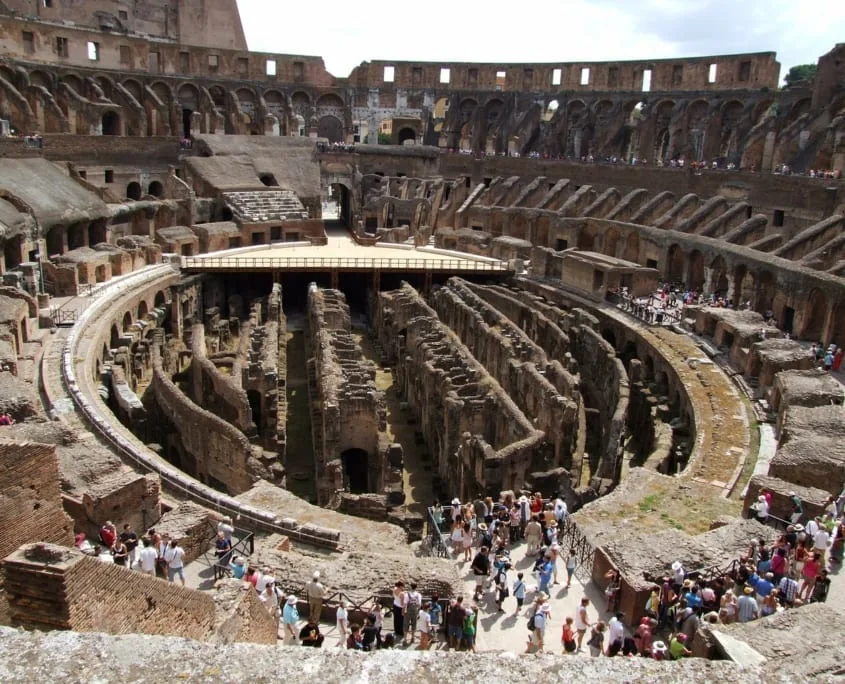

✈️ Próxima parada · Roma, Italia
Próximo destino... ¡ROMA!
Cuenta atrás para perdernos por sus calles, disfrutar de buena comida y lo más importante... ¡Disfrutar juntos! 🇮🇹

--Días
--Horas
--Minutos
Benvenuti a Roma! 🇮🇹✨
La nostra avventura
Roma, día a día
Selecciona un día para ver de un vistazo la ruta, el mapa, el orden de las paradas y los lugares que vais a visitar.